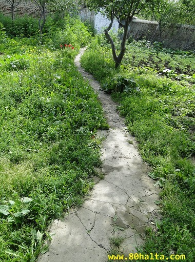
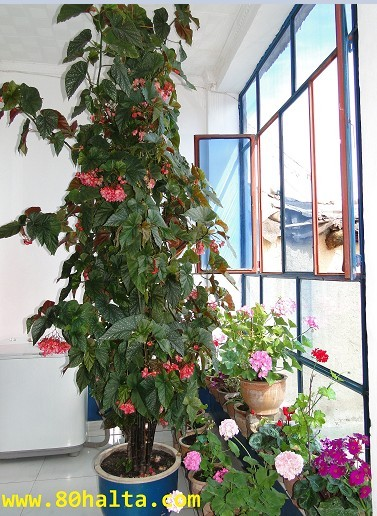

ئالدىنقى يازما
ئالدىنقى يازما كېيىنكى يازما
كېيىنكى يازما
بىرزاتنىڭ يازلىق ساياھەت پىلانى تۈزۈشىگە تەكلىپ بىرىڭ!
ئاپتور:Birzat ۋاقتى:2011-03-10


مېنىڭ قارىشىمدا ساياھەت قىلىشتىن مۇنداق ئىككى مەقسەتكە يەتكىلى بولىدۇ:
1.ئەڭ موھىمى خىزمەت ۋە تۇرمۇش بېسىمىدىن قۇتۇلۇپ ئازادە بىر كەيپىيات ئىچىدە ئارام ئىلىش، جىددىي تۇرمۇش رېتىمى پەيدا قىلغان يۈرەك، مېڭە-قان تومۇرلاردىكى بېسىمنى يېنىكلىتىش،رەئىس ئەزالارنى چوڭ بىر قېتىملىق ئارام ئالدۇرۇش ئارقىلىق ساغلاملىقنى كاپالەتكە ئىگە قىلىش.
2.سىرتقى دۇنيادىكى ئۆزگىچىلىكلەرنى كۆرۈش ئارقىلىق مېڭىدىكى ئۇچۇرلارنى بېيىتىش، ئىدىيە، كۆز قاراشلىرىدا تەڭشەش ئىلىپ بىرىش، مۆجىزە كەبىي تەبىئەت گۈزەللىكىدىن زوقلىنىش.
تىرىكچىلىك، تۇرمۇش ھەلەكچىلىكى ئىلكىگە چىرمىۋالغان، ئالدىغا سېلىۋالغان ئادەمنىڭ روھىي، مەنىۋى ئوزۇققا بولغان تەلىپى ئۇنچە يۇقۇرى بولمىسا كېرەك. چۈنكى ئۇنىڭ مەنىۋىيلىككە يېتىش، پىكىر-تەپەككۈرغا چۆكۈش، ھايات، ئۆلۈم ھەققىدە ئەستايدىل پىكىر يۈرگۈزىدىغانغا ۋاقتى چىقماي قالىدۇ. ساقسىز بولۇپ قالغانلىقى ئۆزىگە مەلۇم بولۇپ تۇرۇۋاتسىمۇ داۋالىنىشنى، روھىيتى قاغجىراپ كېتىۋاتسىمۇ سۇغۇرۇپ قويۇشنى ئىزچىل ئارقىغا سۆرەپ ئاخىرىدا نېمىلەرنى يوقۇتۇپ نېمىلەرگە ئىرىشكىننى دەڭسەپ بولغۇچە ھاياتى ئاخىرقى بىكەتكە كىلىپ بولىدۇ.
ھايات بىر سەپەر، بۇ سەپەرگە ئاتلانغانلارنىڭ مەنزىلى، نىشانى پەرقلىق. ھەتتا بەزىلەر بۇ ھاياتتا ھېچقانداق مۇددىئا-مەقسەتسىزلا سەپەرگە چىقىپ قالغانلاردۇر. ئۇلار قەيەرگە بىرىپ، قەيەردە توختىتىشىنى بىلمەيدۇ. بەلكى بۇ ھەقتە ئەستايدىل بىر پىكىر-تەپەككۇرغا چۈمۈلۈپ باقمىغان. پەقەت باشقىلارنىڭ ھايات سەپىرىگە چىققانلىقىنى كۆرۈپلا ئەگىشىپ ياشاپ بىقىۋاتقانلار. بۇلار ياشاشقا زۆرۈر ماددىي ئىھتىياجلارنىڭ ئارقىسىدىن قوغلىشىپ ئالدىراش ياشاۋاتقانلاردۇر.
ئەمدى باشقىلارنى قويۇپ ئۆزۈمنىڭ بۇ يىل يازدىكى بىرئايلىق ساياھەت پىلانىمنىڭ مەن كۆزلىگەندەك ئۈنۈمگە ئىرىشىشى ئۈچۈن تورداشلاردىن سورايدىغانلىرىمنى ئوتتۇرغا قوياي:
1.ساياھەت قىلماقچى بولغان ئاساسلىق ئورۇن غۇلجا - ئىلى دەريا ۋادىسىدىكى بىر كۆرۈشكە تېگىشلىك جايلار، بۆرتالا، قاراماي، ئاقسۇ-كۇچا، ئۈرۈمچى، كورلا قاتارلىق جايلارنىڭ ساياھەت نۇقتىلىرى ھەققىدە ئۇچۇرلارغا ئىھتىياجلىق بولۇپ قالدىم. مەن خىلى يۇرتلارنى كەزگەن، سەيلى-ساياھەتلەردە بولغان بولساممۇ غۇلجىغا تېخى قەدەم بېسىپ باقماپتىمەن. شۇڭا تورداشلار بۇ ھەقتىكى ئۇچۇرلىرىنى ئايىمىغاي. ئاندىن غۇلجا ساياھىتى قايسى ۋاقىتتا بولسا ئەڭ مۇۋاپىق؟ مەن 7-ئايدىن 8-ئاينىڭ ئوتتۇرلىرىغىچە بولسا بولامدىكىن دەپ ئويلىدىم، بۇ ئويلىغىنىم مۇۋاپىقتەكمۇ؟
2.ئۆز كەسپىم بولغان تېبابەت ساھەسىدىكى دوستلار بىلەن ئۇچرىشىپ كەسپىي جەھەتتىن يېڭىلىقلار، تەجىربىلەرنى ئالماشتۇرۇش، ئۆز-ئارا ئۈگۈنۈش ئۈچۈن پىكىر-مۇلاقاتلاردا بولغۇم بار. بۇ ھەقتە پىكىرلىشىشنى، ئۆز-ئارا ھەمكارلىق ئورنىتىشنى خالايدىغان تورداشلار بولسا كەسىپ، تىجارەت دائىرىسى، كەسپىي ئارتۇقچىلىقلىرى، دۇكان ياكى خىزمەت ئورنى، ئالاقىلىشىش ۋاستىسى قاتارلىقلار ھەققىدە ئىنكاس ئارقىلىق ئۇچۇر بەرسە بولىدۇ. تېبابەت كەسپىنى تەرەققى قىلدۇرۇپ خەلقنىڭ ساغلاملىقى ئۈچۈن بىر كىشىلىك ھەسسىنى قوشىۋاتقان كىشىلەرنى 80خالتا بلوگىمدا تەشۋىق قىلغۇم بار. قېنى ئەمىسە تورداشلار پايدىلىق ئىنكاسلىرىڭلارنى ئايىمىغايسىلەر!!!


 يازما مەنبەسى: بېكەت ئەسىرى
يازما مەنبەسى: بېكەت ئەسىرى خەتكۈش: ساياھەت
خەتكۈش: ساياھەت  مۇناسىۋەتلىك يازمىلار:
مۇناسىۋەتلىك يازمىلار:
 قايتۇرما
قايتۇرما ]
]
بۇيىل رامىزان ئىيىنى چىڭ تۇتۇپ چىن قەلبىڭلار بىلەن ئاللاھنى ياد ئىتىپ، رامىزاننى تولۇق تۇتۇپ،ئاللاھتىن تىلەڭلار.ئاللاھ خالىسا چوقۇم قۇتۇلۇپ كىتىسىلەر. ھازىرقى تەدبىرىڭلا كىيىنكى تەقدىرىڭلارنى بەلگىلەيدۇ. ئۇلۇغ ئاللا ھەممىمىزگە ئاسانلىق بەرسۇن!


3.باغراش ساياھەت رايۇنى،كورلا شەھەر ئىچىدىن30كىلومىتىردىن80كىلومىتىرغىچە كىلىدۇ.
4.بايىنبۇلاق ساياھەت رايونى كورلا شەھەر ئىچىدىن 350كىلومىتىرچە كىلەمىكىن.4.كۇنەس ئورمان باغچە ساياھەت رايونى كورلا شەھەر ئىچىدىن 350كىلومىتىرچە كىلىدۇ.5.ئالتون سائىل مەنزىرلىك رايونى كورلا شەھەر ئىچىدىن 200كىلومىتىرچە كىلىدۇ.6كىپىنەك جىلغىسى كورلا شەھىرىدىن 200كىلومىتىرچە كىلىدۇ.
7.توغراق باغچىسى كورلا شەھىرىدىن 250كىلومىتىرچە كىلىدۇ.8.تاغ سارىخان باغچىسى كورلا شەھەر مەركىزىدىن 7كىلومىتىر كىلىدۇ. مەن سىزنى مۇشۇنچىلىك ئۇچۇر بىلەن تەمىن ئىتەي.مەن كىلەر ھەپتە ئۈرۈمچىگە بىر ئايلىق ئۈگۈنۈشكە چىقمىغان بولسام بىرزات ئەپەندىنى كورلىنىڭ بەك گۈزەللىكىنى بىر كۆرسىتىپ قويغان بولاتتىم.ئەپسۇس!
ئۇچتۇرپاندىكى ساياھەت رايۇنى: يەتتەقىزلىرىم مازىرى، قازان بۇلاق، سويۇتقۇ، توققۇز بۇلاق، مۆلجەرتاغ،.
ئۇچتۇرپانغا بېرىشنى ئويلاشسىلا ماڭا خەۋەر قىلسىلا ئالدىلىرىغا ئادەم چىقىرىمەن.
غۇلجا، كورلا، ئاقسۇ، ئۈرۈمچى....
13565662787 تېلفۇن نۇمۇر.
ھە راست ، دۇكاننى كىم ئېچىپ تۇرىدۇ ؟ بېشىم شۇنىڭدىن قېتىۋاتىدۇ .....
غۇلجا شەھەر كۈنەس ناھيىسنىڭ نارات ساياھەت ئورنى ئىنتايىن ياخشى ، دۆلەتلىك 4 چوڭ يايلاقىنىڭ بىرى ، مەنزىرىسى ئالامەت پەيزى ، مىنىڭچە شۇ يەرگە بىرىپ ساياھەت قىلىسڭىز ، جەننەتكە كىرىگەندەك بولىسىز ،
مەنمۇ بۇ يىل يازغا غۇلجىنى نىشانلاپ قويدۇم ....5 كۈنلۈككە